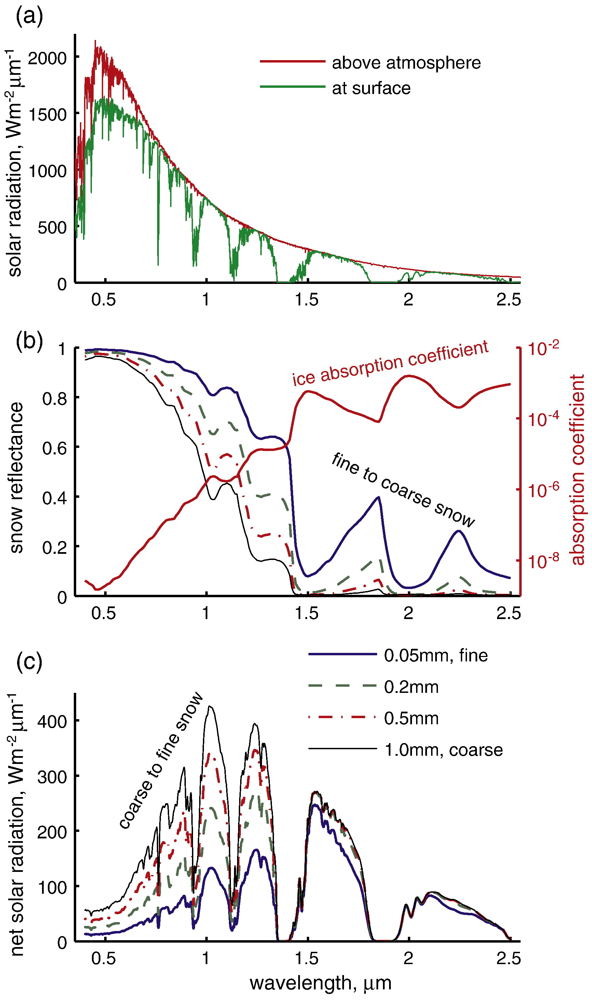

Snow Microstructure Tutorial¶
by Mike Durand, School of Earth Sciences and Byrd Polar & Climate Research Center durand.8@osu.edu
Learning Objectives¶
At the end of this tutorial you should be able to…
Explain why microstructure is important for remote sensing
Define measures of microstructure, especially specific surface area
Access and visualize tree different microstructure measurements from SnowEx Grand Mesa 2020
Acknowledgments¶
Contributions from: Micah Johnson, Mike Durand, HP Marshall, Tate Meehan, Megan Mason, Scott Henderson. This relies heavily on the snowexsqul database and example scripts created by Micah Johnson.
Caveats¶
The integrating sphere and the SMP data are published at NSIDC; you can read the pages there for documentation etc. However the microCT data are not yet published; please contact Lauren Farnsworth (lauren.b.farnsworth@usace.army.mil) for questions on the CT data.
Fun Facts About Snow Microstructure¶
Snow microstructure plays a super important role in snow physics and snow remote sensing, so a lot of effort went towards measuring it in SnowEx 2020!
There are several different quantities that are used to measure snow microstructure, including “grain size”. Grain size measurements are challenging to make in a repeatable way, and are also challenging to relate to the physical quantities that control remote sensing measurements. In the last ~15 years or so, a lot of effort has gone into more objective ways to measure microstructure.
Snow microstructure governs response of remote sensing to snow cover for visible, near-infrared and high-frequency microwave wavelengths. See Figure 1, below, and read [Dozier et al., 2009], for more information.
{kind=link}
Snow microstructure governs visible and near-infrared reflectance. This is figure 2 from [Dozier et al., 2009]
Radar measurements such as those made by the Ku-band SWEARR instrument are also very sensitive to snow microstructure.

Modeled response of radar backscatter to SWE and single-scatter albedo (which in turn is a function of snow microstructure), based on a simple model suggested by [Ulaby, 2014]
Snow microstructure is super important to efforts to launch a Ku-band SAR to measure global snow water equivalent (SWE). An important area of research right now is exploring how to use estimates of microstructure (e.g. from snowpack evolution models) to improve SWE retrievals.
Snow microstructure evolves through the season, and varies a lot with depth. Snow microstructure evaluation is controlled by other snow properties, such as snow temperature, snow height and snow liquid water content. A really great resource on snow microstructure is Kelly Elder’s recent talks:
SnowEx Microstructure Measurement Background¶
Basic Microstructure Definitions¶
Microstructure definitions take a bit of getting used to. It’s very easy to get confused. Specific surface area (SSA) is one of the most important quantity used to measure snow microstructure, so that’s the focus here. Note that SSA is not the be-all and end-all, so there’s a short table describing how to relate SSA to other quantities just below. A couple of good reads on all of this is [Mätzler, 2002] and [Matzl and Schneebeli, 2010].

Coarse and fine snow microstructure revealed by microCT. The microCT snow renderings on the left are Figure 2 from [Löwe et al., 2011]. The colorbars indicate that fine-grained snow (a) has high SSA and low Deq, whereas coarse-grained snow (b) has low SSA and high Deq.
Use Figure 3 above to ground these definitions: SSA is the surface area of the ice-air interface, normalized in some way. Confusingly, SSA is defined in a couple of different ways in the literature: sometimes, surface area within a particular volume of interest (VOI) is normalized by the mass of the ice in the VOI. As defined in this way, SSA has units of length squared per mass, usually expressed as m2/kg. Instead of normalizing by mass, SSA is sometimes defined by normalizing by the volume of the VOI (this is SSAv in [Matzl and Schneebeli, 2010]), and sometimes by normalizing by the volume of the ice in the VOI (this is SSAi in [Matzl and Schneebeli, 2010], and q in [Mätzler, 2002]). Here let’s just go with the first definition I mentioned:
SSA tends to take values between 5 and 150 m2/kg: fresh, fine-grained snow has high SSA, and coarse snow has low SSA. Because it takes a little while for SSA values to become intuitive, a useful derived metric is the equivalent grain diameter (Deq; note that this is identical to Dq in [Mätzler, 2002]), which by definition is the diameter that a sphere would have if it had a particular value of SSA. This is a one-to-one relationship, so there are no assumptions involved.
Relationships of specific surface area to other metrics are given in this list if you’re curious but otherwise just skip past this bit
Sometimes people refer to the “optical grain diameter”, which is the same as Deq. The “optical” refers to [Grenfell and Warren, 1999], who showed that any snow with a particular SSA had similar (not identical) radiative transfer properties regardless of particle shape in the visible and near-infrared parts of the spectrum. But note the same is not true in the microwave spectrum.
Auto-correlation length is usually one of two metrics that summarize the two-point microstructure auto-correlation function of the three-dimensional ice-air matrix. Think of the probability that you change media (from ice to air or vice versa) as you move a certain distance within the snow microstructure. The length that defines the likelihood that you’ll change media is (an approximation of the correlation length). SSA is by definition (with almost no assumptions) equal to the slope of the autocorrelation function at the origin. But microwave scattering is controlled by correlations at longer lags. For more check out [Mätzler, 2002]. The lack of closing the loop between SSA and correlation length is a significant issue when we have measurements of SSA and microwaves as we do in SnowEx.
Geometric grain size is what we usually measure when we measure with a hand lens. You can try to relate it to SSA or corelation length, but it is not always possible, and will change with different observers.
Time to stop this list but there are many other metrics as well.
Microstructure Instruments¶
Now that we know what we’re trying to measure (SSA, or correlation length) how do we actually measure? let’s talk just about three techniques used in SnowEx 2020 Grand Mesa.

Left: Lauren Farnsworth transports microCT samples from field sites back to Grand Mesa Lodge in a cold storage container. Right: the microCT machine in the lab at CRREL.
Micro-computed tomography (microCT) is the only laboratory-based method used here, and it is the gold standard, although it does still come with caveats. The idea of microCT is to remove a sample of snow from a snow pit face, and either cast it with a compound such as diethyl pthalate that is still a liquid at 0° C, or preserve the same at a very cold temperature. Then the sample is sent back to the laboratory, and bombared with x-rays, similar to how you get x-rays to see if a bone is broken at the doctor. For much more on microCT, check out [HEGGLI et al., 2011]. microCT can be used to extract a ton of information about snow microstructure, including SSA, correlation length and many others.

Left: Kehan Yang operates an IceCube unit at the Grand Mesa Lodge intercomparison snowpit. Top right: schematic showing the integrating sphere measurement principle, from [Gallet et al., 2009]. Bottom right: snow in the IceCube sampling container, from [Leppänen and Kontu, 2018].
Integrating spheres are field-based and you make the measurements on samples extracted from the snowpit face. The principle of the measurement is based on firing a laser at the snow sample, within a special reflective hollow sphere, where one side is filled by the snow sample, and measuring how much of the laser is reflected at a sensor at a known geometry. For more information, check out [Gallet et al., 2009]. Most integrating sphere measurements are either made by a commercial firm (A2 Photonics) known as the IceCube or a version constructed at the University of Sherbrooke known as the IRIS [Montpetit et al., 2012]. These approaches are set up to measure SSA only. There were three of these at Grand Mesa - one of the Sherbrooke IRIS units, and two IceCubes, one from Finnish Meteorological Institute, and one from Ohio State University.

Left: Megan Mason operates the SMP. Right: Closeup of the SMP sensor tip.
Snow micropenetrometers are also a field-based approach, but they do not require a snowpit, enabling far more observations to be made. Instead, an automated motor pushes a probe vertically downwards into the snowpack. The probe measures the force required to break snow microstructure, yielding a wealth of information. Snow density, specific surface area and correlation length can be retrieved; for more results see [Löwe and Herwijnen, 2012] and [Proksch et al., 2015]. The micropen effort at Grand Mesa was led by Boise State University.
These methods are not the only ways to measure microstructure! There are several others not mentioned here, but not used at Grand Mesa 2020. Ask if interested.
SnowEx Microstructure Measurement Data Overview¶
Of the three methods described above, microCT is by far the most expensive and most time consuming. Samples have to be transported back to the laboratory and the processing time requires a microCT machine. Thus the fewest CT sapmles are taken.
The integrating spheres require a snowpit to be dug, so we have an intermediate number of them: ~100.
The micropen measurements are by far the fastest to make, so a cross pattern of SMP measurements was made on orthogonal directions intersecting at the snowpit. There are thousands of SMP profiles from Grand Mesa 2020.
Working with the data¶
We’re going to do two things! First, we’ll intercompare the three different integrating sphere instruments at four different pits where we had multiple instruments operating. We’d expect these data to be fairly self-consistent. Second, we’ll compare all three methods (integrating sphere, SMP and microCT) at a single pit where we had all of these measurements present. Here especially with the SMP we would expect to need to intercalibrate the data to match local conditions; so far SSA has only been fit to SMP force measurements in one study, and we should assume we’ll need a local calibration to get a tight fit.
0. Load needed modules¶
# Modules needed to access snowexsql: SnowEx field data database
from snowexsql.db import get_db
from snowexsql.data import LayerData, PointData
from snowexsql.conversions import points_to_geopandas, query_to_geopandas
# Modules needed to work with data
import geoalchemy2.functions as gfunc
import geopandas as gpd
import matplotlib.pyplot as plt
import pandas as pd
import numpy as np
import warnings
warnings.filterwarnings('ignore')
#note - this cell does not return any output
1. Intercompare Integrating Sphere Datasets¶
There were three integrating spheres. The IRIS unit from University of Sherbrooke was operated by Celine Vargel. The IceCube unit from the Finnish Meteorological Institute was operated by Juha Lemmetyinen. And the IceCube unit from Ohio State was operated by Kehan Yang and Kate Hale. Carefully read the documentation page at NSIDC if you are interested in the data. If you are using the data for a project, please contact the authors and mention what you’re doing - they’ll appreciate it! Contact for SSA is Mike Durand (durand.8@osu.edu).
See Micah’s tutorial on datasets for more on this! Won’t explain too much here
db_name = 'snow:hackweek@52.32.183.144/snowex'
engine, session = get_db(db_name)
# Grab all the equivalent diameter profiles
q = session.query(LayerData).filter(LayerData.type == 'specific_surface_area')
df = query_to_geopandas(q, engine)
# End our database session to avoid hanging transactions
session.close()
df.head() #check out the results of the query
| site_name | date | time_created | time_updated | id | doi | date_accessed | instrument | type | units | ... | geom | time | depth | site_id | bottom_depth | comments | sample_a | sample_b | sample_c | value | |
|---|---|---|---|---|---|---|---|---|---|---|---|---|---|---|---|---|---|---|---|---|---|
| 0 | Grand Mesa | 2020-02-01 | 2021-06-01 18:43:25.958229+00:00 | None | 12556 | https://doi.org/10.5067/SNMM6NGGKWIT | 2021-06-01 | IRIS | specific_surface_area | None | ... | POINT (742607.000 4322917.000) | 09:00:00-06:00 | 74.0 | 1S8 | None | surface hoar | None | None | None | 31.24 |
| 1 | Grand Mesa | 2020-02-01 | 2021-06-01 18:43:25.959662+00:00 | None | 12557 | https://doi.org/10.5067/SNMM6NGGKWIT | 2021-06-01 | IRIS | specific_surface_area | None | ... | POINT (742607.000 4322917.000) | 09:00:00-06:00 | 71.0 | 1S8 | None | None | None | None | None | 38.22 |
| 2 | Grand Mesa | 2020-02-01 | 2021-06-01 18:43:25.960999+00:00 | None | 12558 | https://doi.org/10.5067/SNMM6NGGKWIT | 2021-06-01 | IRIS | specific_surface_area | None | ... | POINT (742607.000 4322917.000) | 09:00:00-06:00 | 69.0 | 1S8 | None | None | None | None | None | 38.98 |
| 3 | Grand Mesa | 2020-02-01 | 2021-06-01 18:43:25.962333+00:00 | None | 12559 | https://doi.org/10.5067/SNMM6NGGKWIT | 2021-06-01 | IRIS | specific_surface_area | None | ... | POINT (742607.000 4322917.000) | 09:00:00-06:00 | 64.0 | 1S8 | None | None | None | None | None | 37.35 |
| 4 | Grand Mesa | 2020-02-01 | 2021-06-01 18:43:25.963983+00:00 | None | 12560 | https://doi.org/10.5067/SNMM6NGGKWIT | 2021-06-01 | IRIS | specific_surface_area | None | ... | POINT (742607.000 4322917.000) | 09:00:00-06:00 | 59.0 | 1S8 | None | None | None | None | None | 24.56 |
5 rows × 27 columns
Since we want to intercompare integrating spheres, we need to isolate only the sites that actually had multiple integrating spheres measuring the same snow.
# Grab all the sites with equivalent diameter data (set reduces a list to only its unique entries)
sites = df['site_id'].unique()
# Store all site names that have multiple SSA instruments
multi_instr_sites = []
instruments = []
for site in sites:
# Grab all the layers associated to this site
site_data = df.loc[df['site_id'] == site]
# Do a set on all the instruments used here
instruments_used = site_data['instrument'].unique()
if len(instruments_used) > 1:
multi_instr_sites.append(site)
# Get a unqique list of SSA instruments that were colocated
instruments = df['instrument'].unique()
instruments #check out the list of instruments. note that the IceCube values are displayed as serial numbers
array(['IRIS', 'IS3-SP-11-01F', 'IS3-SP-15-01US'], dtype=object)
Finally, plot all Integrating Sphere SSA profiles at all Multi-Integrating Sphere Sites
# Setup the subplot for each site for each instrument
fig, axes = plt.subplots(1, len(multi_instr_sites), figsize=(4*len(multi_instr_sites), 8))
# Establish plot colors unique to the instrument
c = ['k', 'm', 'c']
colors = {inst:c[i] for i,inst in enumerate(instruments)}
# Loop over all the multi-instrument sites
for i, site in enumerate(multi_instr_sites):
# Grab the plot for this site
ax = axes[i]
# Loop over all the instruments at this site
for instr in instruments:
# Grab our profile by site and instrument
ind = df['site_id'] == site
ind2 = df['instrument'] == instr
profile = df.loc[ind & ind2].copy()
# Don't plot it unless there is data
if len(profile.index) > 0:
# Sort by depth so samples that are take out of order won't mess up the plot
profile = profile.sort_values(by='depth')
# Layer profiles are always stored as strings.
profile['value'] = profile['value'].astype(float)
# Plot our profile
ax.plot(profile['value'], profile['depth'], colors[instr], label=instr)
# Labeling and plot style choices
ax.legend()
ax.set_xlabel('SSA [m^2/kg]')
ax.set_ylabel('Height above snow-soil interface [cm]')
ax.set_title('Site {}'.format(site.upper()))
# Set the x limits to show more detail
ax.set_xlim((8, 75))
plt.tight_layout()
plt.show()
2. Pull the snowmicropenetrometer data and compute SSA¶
The next step is to grab some SMP data to compare to. We’re going to get the SMP at site 2N13, where we have a couple of SSA profiles from interacting spheres (as well as microCT data, to be looked at in the next step!).
The SMP measurements for SnowEx 2020 GrandMesa were all made by Megan Mason. If you’re interested in working with the SMP data, please carefully read the NSIDC documentation page. If you’re planning to work with the data, please reach out to the author; the contact is (Megan Mason meganmason491@u.boisestate.edu). If you use a profile, consider checking out the comments which are described in the Excel sheet linked from the Technical References part of the NSIDC documentation, where there are some really useful comments.
There are a few steps here, and one reason for that is just that the SMP data is quite large, and so the full-resolution SMP could not be included in Micah’s database. The full resolution profile from SMP is resolved ever 1.25 mm! Instead, the SMP data in Micah’s database is sampled to only every 100th datapoint, so it’s every 12.5 cm. But the database is still very useful! What we’ll do is use the database to find the right profile, then go and download that full resolution dataset from the NSIDC. Easy-peasey!
First up, we’ll visualize the location of the SMP profiles, along with the snowpit location.
site = '2N13'
engine_smp, session_smp = get_db(db_name)
q_smp = session_smp.query(LayerData).filter(LayerData.type == 'force').filter(LayerData.site_id.contains(site) )
df_smp = query_to_geopandas(q_smp, engine_smp)
q_pit=session_smp.query(LayerData).filter(LayerData.type == 'hand_hardness').filter(LayerData.site_id.contains(site) )
df_pit = query_to_geopandas(q_pit, engine_smp)
session_smp.close()
# Plot SMP profile locations with colored by the time they were taken using upside down triangles
ax = df_smp.plot(column='time', cmap='jet', marker='v', label='SMP', figsize=(5,5), markersize=100, edgecolor='black')
ax.plot(df_pit.easting, df_pit.northing, color='black', marker='s', markersize=15, label='Pit ({})'.format(site))
# Add important labels
ax.set_xlabel('Easting [m]')
ax.set_ylabel('Northing [m]')
plt.suptitle('SMP Locations at Site {} Showing Acquisition Order'.format(site), fontsize=16)
# Avoid using Scientific notation for coords.
ax.ticklabel_format(style='plain', useOffset=False)
ax.legend()
# plt.tight_layout()
plt.show()
Next up, let’s find the closest SMP profile to the snowpit, and then find the profile ID of that profile, which is in the comments in the database.
# find closest SMP profile to the pit
# No profile is taken at the same time, so we grab all the unique times and sort them
times = sorted(df_smp['time'].unique())
nprofiles=len(times)
ids=np.empty(nprofiles)
p=0
for t in times:
ind = df_smp['time'] == t
data = df_smp.loc[ind].copy()
ids[p]=data.iloc[0].id
p+=1
i_dists=df_smp['id'].isin(ids)
df_smp_dists=df_smp.loc[i_dists]
df_smp_dists=df_smp_dists.assign(dists=-1)
df_smp_dists['dists']=np.sqrt((df_smp_dists['easting']-df_pit.iloc[0].easting)**2+(df_smp_dists['northing']-df_pit.iloc[0].northing)**2)
df_smp_dists.sort_values(by='dists')[['comments','dists']].head() #check out the list of profiles sorted by distance to pit
| comments | dists | |
|---|---|---|
| 7874 | fname = SNEX20_SMP_S19M1174_2N13_20200206.CSV,... | 1.551466 |
| 22517 | fname = SNEX20_SMP_S19M1175_2N13_20200206.CSV,... | 2.900187 |
| 16588 | fname = SNEX20_SMP_S19M1173_2N13_20200206.CSV,... | 5.031469 |
| 26026 | fname = SNEX20_SMP_S19M1172_2N13_20200206.CSV,... | 5.031469 |
| 4850 | fname = SNEX20_SMP_S19M1176_2N13_20200206.CSV,... | 14.095757 |
So the id of the closest SMP profile is S19M1174. I went to the SMP page on NSIDC, and went to “Download” and searched for this ID, downloaded the profile, and then re-uploaded to my home directory here in the Jupyter hub.
Ok next up, we have to compute SSA from the SMP data. For this, we’ll use the “snowmicropyn” modules created by the Swiss SLF. You can read more about them at this site. The software is a little out of date on Python versions; just ignore any warnings that pop up below!
The next cell pulls in the needed modules, and then plots the profile of force measurements needed to break through the snow microstructure.
from snowmicropyn import Profile
from snowmicropyn import proksch2015
# Pull in some tutorial datasets
!aws s3 sync --quiet s3://snowex-data/tutorial-data/microstructure/ /tmp/microstructure
p = Profile.load('/tmp/microstructure/SMP/SNEX20_SMP_S19M1174_2N13_20200206.PNT',)
plt.plot(p.samples.distance, p.samples.force)
# Prettify our plot a bit
plt.title(p.name)
plt.ylabel('Force [N]')
plt.xlabel('Depth [mm]')
plt.show()
The next step is the actual calculation of SSA from the force data. It then displays the data and lets you see that there is now a column called SSA! Note that this function is “proksch2015”. You can read about how it works in Martin Proksch’s paper [Proksch et al., 2015].
# the window size is a parameter you can play with. default is 2.5 mm setting to 10 mm does some smoothing
p2015 = proksch2015.calc(p.samples,window=10)
p2015.head() #check out the first few values of SSA
| distance | P2015_density | P2015_ssa | |
|---|---|---|---|
| 0 | 0.0 | 138.807871 | 43.578891 |
| 1 | 5.0 | 133.771549 | 47.658957 |
| 2 | 10.0 | 129.812119 | 53.579023 |
| 3 | 15.0 | 129.890037 | 53.449012 |
| 4 | 20.0 | 128.434393 | 55.982357 |
3. Read microCT data, and compare integrating sphere, SMP and CT data¶
The microCT samples were extracted in the field and processed at CRREL by Lauren Farnsworth, and is not yet published at NSIDC. Please contact her with questions (lauren.b.farnsworth@usace.army.mil)!
This module reads in microCT datafiles which are stored as text. Some additional data are available, showing the computer generated slices through the ice-air interface: contact Mike (durand.8@osu.edu) if you want to look at a subset of these data that Lauren has shared.
Equivalent grain size is a useful quantity to compare: because it’s proportional to 1/SSA, and because after a point as you increase SSA more and more, all fine-grained snow acts more-or-less the same (converging to e.g. the “fine-grained” curve in Figure 1, above), we’ll look at equivalent diameter instead of SSA in this comparison.
from read_CT_txt_files import read_CT_txt_files
# read micro CT for 2N13
data_dir='/tmp/microstructure/microCT/txt/'
[SSA_CT,height_min,height_max]=read_CT_txt_files(data_dir)
SSA_CT #check out the SSA values read in from MicroCT
array([10.43911668, 10.73460196, 10.6057361 , 10.9089422 , 11.16761178,
11.70006543, 11.76880044, 11.74672846, 11.577241 , 11.73143948,
11.68001091, 11.10273719, 11.7619084 , 11.87629226, 11.68687023,
11.42565976, 11.54909487, 11.30210469, 11.32300981, 11.32594329,
10.93379498, 10.92513631, 11.01997819, 10.67981461, 11.10715376,
10.99905125, 10.75124318, 11.50651036, 12.57513631, 12.81523446,
12.7846783 , 12.8248964 , 12.87141767, 13.00685932, 12.73911668,
13.01716467, 12.88 , 13.56685932, 13.35838604, 13.97314068,
14.23908397, 16.31159215, 17.56122137, 18.06660851, 17.45089422,
18.15394766, 17.93645583, 17.8674482 , 17.99497274, 17.89236641,
18.25597601, 18.17002181, 19.18184297, 19.1782988 , 18.36195202,
17.75116685, 17.61587786, 18.12836423, 17.58134133, 18.08393675,
18.87725191, 19.1989422 , 18.93825518, 17.83435115, 18.0187241 ,
16.42268266, 18.64861505, 17.39344602, 18.0421265 , 19.23437296,
22.07477644])
# get data integrating sphere data for 2N13 and plot it
site='2N13'
engine_is, session_is = get_db(db_name)
q_is = session_is.query(LayerData).filter(LayerData.type == 'specific_surface_area').filter(LayerData.site_id.contains(site) )
df_is = query_to_geopandas(q_is, engine_is)
instruments_site = df_is['instrument'].unique()
# Loop over all the integrating sphere instruments at this site. plot equivalent diameter
fig,ax = plt.subplots()
for instr in instruments_site:
# Grab our profile by site and instrument
ind = df['site_id'] == site
ind2 = df['instrument'] == instr
profile = df.loc[ind & ind2].copy()
# Don't plot it unless there is data
if len(profile.index) > 0:
# Sort by depth so samples that are take out of order won't mess up the plot
profile = profile.sort_values(by='depth')
# Layer profiles are always stored as strings.
profile['value'] = 6/917/profile['value'].astype(float)*1000
# Plot our profile
ax.plot(profile['value'], profile['depth'], colors[instr], label=instr)
#All that's left to do is plot the CT and the SMP and label the plot!
ax.plot(6/917/SSA_CT*1000,height_min,label='microCT') #CT data
ax.plot(6/917/p2015.P2015_ssa*1000,(max(p2015.distance)-p2015.distance)/10,label='SMP') #SMP data
# Labeling and plot style choices
ax.legend()
ax.set_xlabel('Equivalent diameter, mm')
ax.set_ylabel('Height above snow-soil interface [cm]')
ax.set_title('Site {}'.format(site.upper()))
plt.tight_layout()
plt.show()
Wow, so the datasets are so very different, with the SMP being by far the most different. Because we might expect that the SMP is quite a ways off, actually, as the relationships between the force profile and SSA are empirical, and thus might change for different types of snow. There’s also significant differences between the microCT and the two integrating spheres. This is science - sometimes when we start intercomparing these quantities, we do not get a perfect match. This data hasn’t had kinks worked out yet - this is all hot off the press and ready for HackWeek!
Some of the ways that you could imagine connecting microstructure measurements to other quantities would be with the SWESARR radar data. Although the radar data does seem to have some orthorectification issues that haven’t been fully worked out, I can imagine these being worked around by careful choice of places you match up the microstructure to the radar. Note that places that are shallower tend to have larger Deq and vice versa, and the spatial variability in SSA was fairly low in general in Grand Mesa 2020, so looking at multiple SSA vs radar samples might not yield a great correlation. But you never know, could be fun to try! Generally speaking, we don’t expect a ton of impact of the microstructure on L-band (UAVSAR), but it would be interesting to explore that.
One thing that could be of great value is to calibrate the SMP estimates of SSA to the integrating spheres. If you’re interested in doing that, do reach out first. This could be a really interesting thing to explore!
It might also be interesting to compare the data to hand hardness measured in the snowpit, and to traditional hand lens measurements.